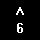

| Chapter 1 | Contents |
| SET-UP Feature | Changed In | Key Used to Change Feature | SET-UP Feature | Changed In | Key Used to Change Feature | ||
|---|---|---|---|---|---|---|---|
| SET-UP A Mode | SET-UP B Mode | SET-UP A Mode | SET-UP B Mode | ||||
| ANSI/VT52 Mode | X |  | PARITY | X | |||
| ANSWERBACK Message | X | † | PARITY SENSE | X | |||
| AUTO REPEAT | X | POWER | X | ||||
| AUTO XON XOFF | X | RECEIVE SPEED | X | ||||
| BITS PER CHARACTER | X | SCREEN BACKGROUND | X | ||||
| CHARACTERS PER LINE | X | SCREEN BRIGHTNESS | X | X | or |
||
| CURSOR | X | SCROLL | X | ||||
| INTERLACE | X | TABS | X | ||||
| KEYCLICK | X | TRANSMIT SPEED | X | ||||
| LINE/LOCAL | X | X | WRAPAROUND | X | |||
| MARGIN BELL | X | X | |||||
| NEW LINE | X | ||||||
| † A special sequence is required for this feature | |||||||